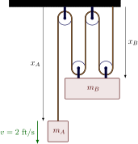

Sample Problem 1-1
An RC car moves along a straight line. It's position as a function of time is given as
\begin{align}
x=t^3- 3t^2-24t+36
\end{align}
where \(x\) is in meters and \(t\) is in seconds. Find (a) the time when the velocity is zero, (b) the position and the total distance traveled at that time, and (c) the acceleration at that time.
Sample Problem 1-2
A sprinter runs a 100-m race. For the first 5 seconds the runner accelerates uniformly and covers a distance of 25 meters. The runner then maintains a constant velocity for the remaining 75 meters. Determine the runner's a) acceleration, b) final velocity, c) finishing time. Then find (d) the speed of the runner at the 10 meter mark.
Sample Problem 1-3
In an elevator shaft, a ball is thrown vertically upward with an initial velocity of 18 m/s from a height of 12 m above the ground. At the same instant, an open-platform elevator passes the 5 m level, moving upward with a constant velocity of 2 m/s. Determine (a) when and where the ball hits the elevator, (b) the relative velocity of the ball with respect to the elevator when the ball hits the elevator.
Sample Problem 1-4
In the pulley system shown below mass \(A\) has a velocity of 2 ft/s at some instant in time. What is the upward speed of mass \(B\) at the same instant?

Practice 1-1
The motion of a particle is defined by the relation
\begin{align*}
x=t^3-12t^2+36t+30
\end{align*}
where \(x\) and \(t\) are expressed in feet and seconds, respectively. Determine the time, the position, and the acceleration of the particle when \(v=0\).
Practice 1-2
A girl operates a radio-controlled model car in a vacant parking lot. The girl's position is at the origin of the \(xy\) coordinate axes, and the surface of the parking lot lies in the \(xy\) plane. She drives the car in a straight line so that the \(x\) coordinate is defined by the relation \(x(t) = 0.5t^3 - 3t^2 + 3t + 2\), where \(x\) and \(t\) are expressed in meters and seconds, respectively. Determine (a) when the velocity zero, (b) the position and the total distance traveled when the acceleration is zero.